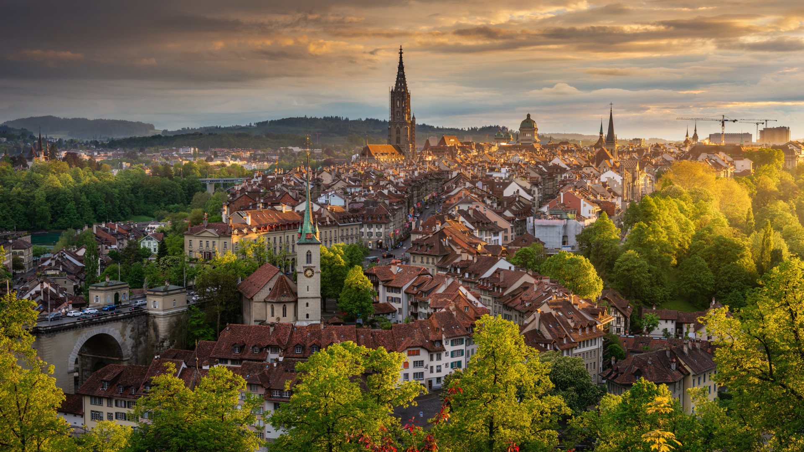

Schweiz
Die Schweiz ist ein föderalistischer, demokratischer Staat in Mitteleuropa. Er grenzt im Norden an Deutschland, im Osten an Österreich und Liechtenstein, im Süden an Italien und im Westen an Frankreich. In der Schweiz leben 8.962.258 Menschen auf 41.291 Quadratkilometern. Der Staat hat Anteil an drei grossen Sprachräumen. Deutsch, Französisch, Italienisch und Rätoromanisch sind die offiziellen Landessprachen der Schweiz. Die Schweizerische Eidgenossenschaft ist ein Bundesstaat, der aus sechsundzwanzig teilsouveränen Kantonen besteht. Sitz der Regierung und des Parlaments ist die Bundesstadt Bern. Die Landesgrenze der Schweiz hat eine Länge von total 1935 Kilometern. Geologisch wird die Schweiz in fünf Hauptregionen eingeteilt. Die Schweiz versteht sich als aussenpolitisch neutral. Die Schweizer Küche verbindet Einflüsse aus der deutschen, französischen und italienischen Küche. Sie ist regional sehr unterschiedlich.